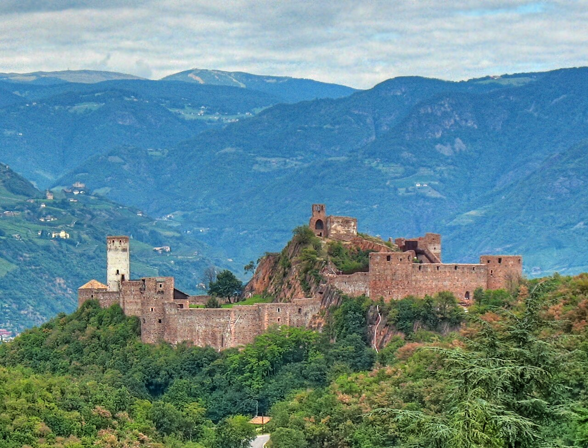
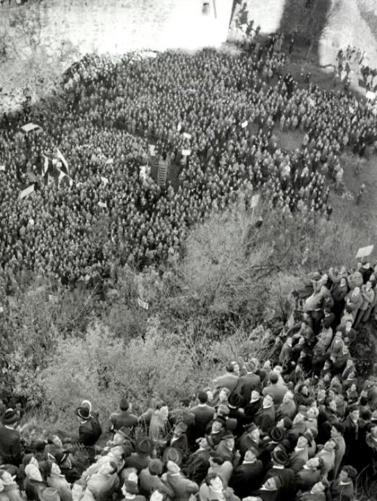
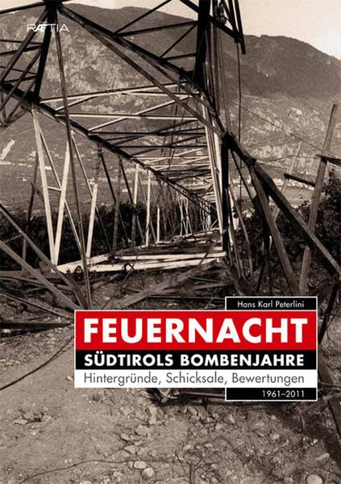
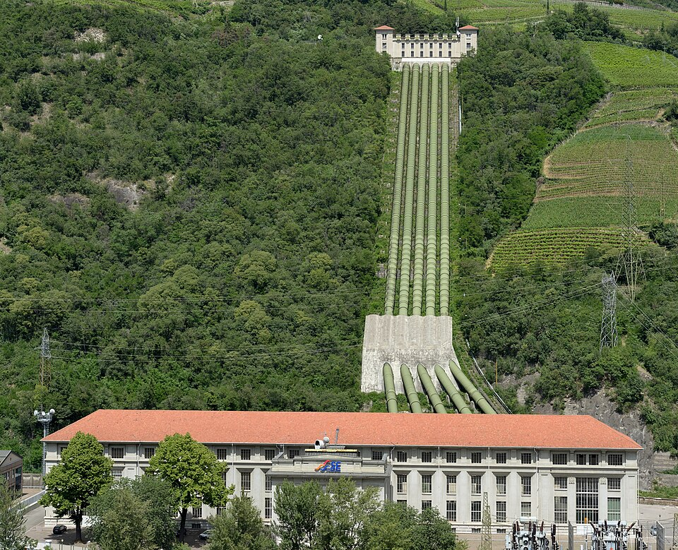
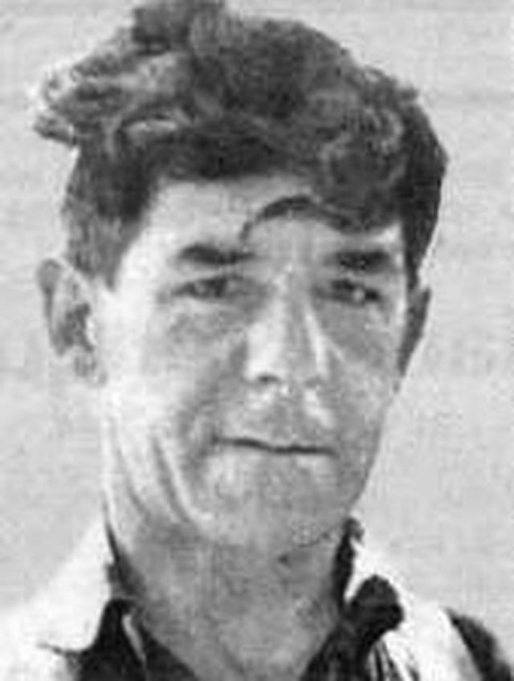
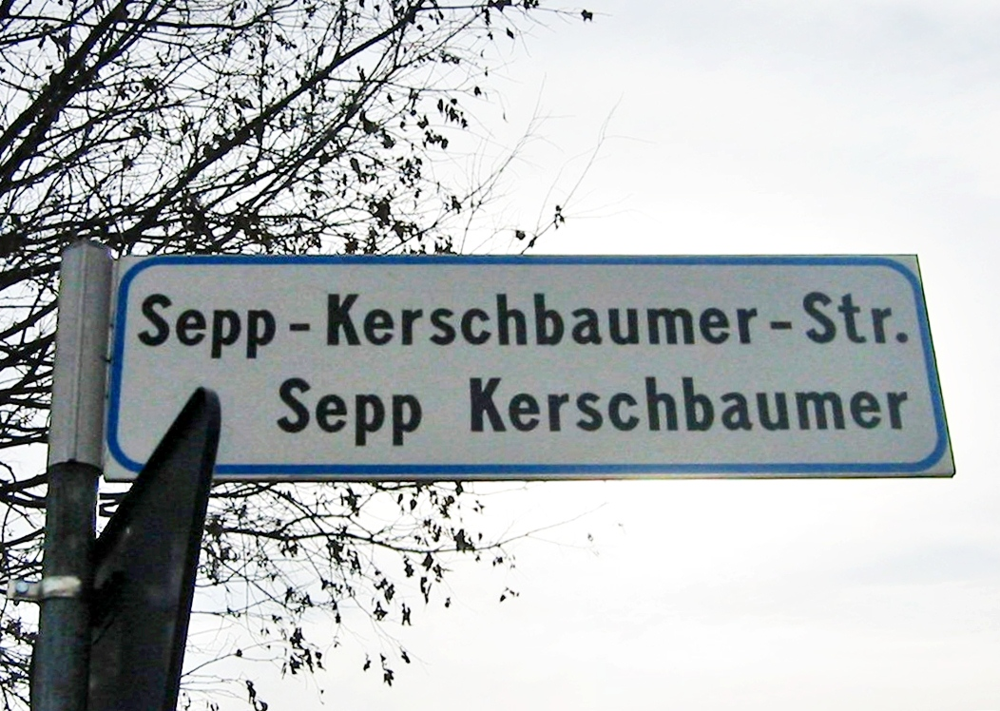
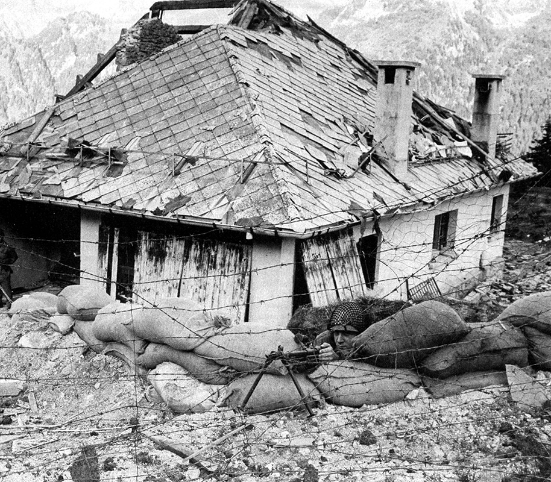
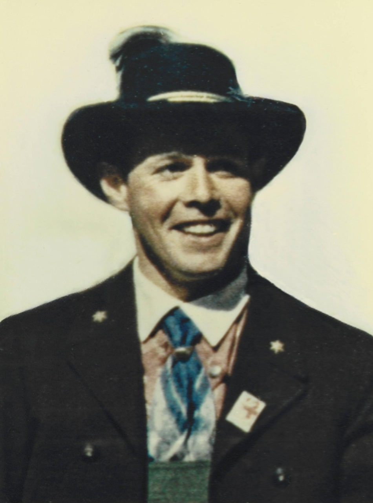
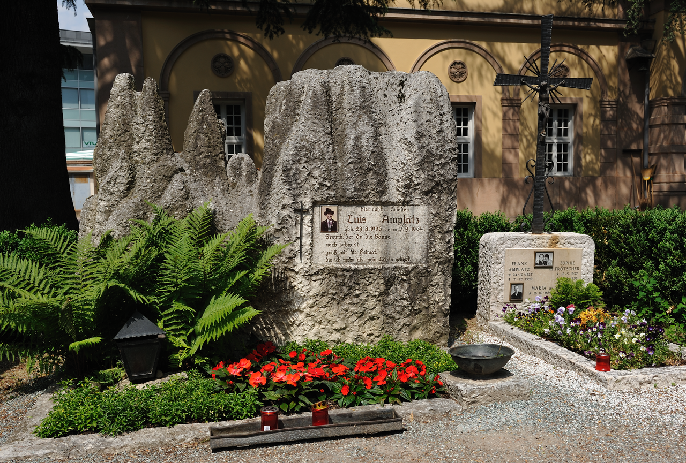

남티롤(Südtirol) 이야기 (8) - "화염의 밤"
게시: 2026-07-09T06:30:34+09:00
이탈리아 중앙정부와의 협상에서 지나친 양보를 했다며 기존 다블라이버 중심의 SVP 지도부를 맹공격함으로써 1957년 SVP의 당수가 된 실비우스 마냐고로서도, 이탈리아 중앙정부와의 협상은 쉽지 않았습니다. 마냐고 자신도 귀환 옵탄텐이었는데, 그런 옵탄텐들을 받아들이는 대신 받아들인 조건, 즉 이탈리아계가 절대 다수였던 트렌티노와 남티롤을 하나로 묶어 트렌티노-알토아디제(Trentino-Alto Adige) 광역주(레죠네, regione)를 만든다는 것이 이미 시행이 되었기 때문입니다. 이탈리아 중앙정부로서도 이미 시행 중인 행정구역을 단지 30만 정도에 불과한 독일계 주민들이 반발한다는 이유로 쉽사리 포기할 수는 없었습니다. 게다가 마냐고가 달래고 싸우고 협상해야 할 대상은 이탈리아 중앙정부뿐만이 아니었습니다. 자신이 이끄는 SVP 밖은 물론 당내에도, 남티롤이 알토아디제(Atlo Adige, 아디제강 상류지역)이라는 듣보잡 이탈리아어로 불리는 것을 거부할 뿐만 아니라 아예 이탈리아에서 벗어나 WW1 이전에 소속되었던 오스트리아로 합병되어야 한다고 주장하는 강경파들이 잔뜩 있었던 것입니다. 최근에도 영국에서 스코틀랜드가, 스페인에서 카탈루냐가 분리독립하겠다고 주민투표를 한 경우는 있었지만 1950년대 당시의 남티롤에서는 그보다 훨씬 분위기가 험악했습니다. 말이 좋아 독일계 주민들의 뜻이 그렇다는 것이지, 엄밀히 말하면 이건 국가에 대한 반역이었습니다. 더군다나 스코틀랜드나 카탈루냐와는 달리 남티롤은 분리독립이 아니라 바로 최근까지도 적국이었던 오스트리아로 합병되겠다는 것이니 진짜 국가 반역에 해당되는 일이었습니다.
(맨 처음에 남티롤에 가보고 느낀 것은 '세상에, 이렇게 아름다운 곳을 빼앗기고 오스트리아놈들 밤에 잠이 오나?' 라는 것이었습니다. 그러나 나중에 그 역사를 검색해보니, 정말 많은 피와 눈물과 갈등이 있었더라구요.)
그런 오스트리아로의 합병에 대한 남티롤 주민들의 갈망은 매우 심각하면서도 사실상 답이 없는 일이었습니다. 바로 30여년 전, 오스트리아로부터 남티롤을 빼앗겠다고 WW1에 뛰어들어 수십만의 이탈리아군이 목숨을 잃었는데 이탈리아 중앙정부가 '주민들이 원한다면 뭐...'라며 그런 합병을 허용할 리도 없었습니다만, 더 큰 문제가 있었습니다. 이미 30년 간 이탈리아 중앙정부의 집요한 이탈리아화 정책으로, 남티롤 전체 주민들 중 1/3 정도는 이미 이탈리아계 주민들이 차지하고 있었던 것입니다. 남티롤의 오스트리아 합병을 이탈리아 정부가 허락한다고 해도, 10만이 넘는 이탈리아계 주민들은 오스트리아 내에서 또다른 재앙의 씨앗이 될 수밖에 없었으므로 오스트리아 정부가 아마 합병에 난색을 표했을 것입니다. 결국 마냐고가 택한 전략은 단순명료하면서도 타협적인 것이었습니다. 즉 이탈리아로부터의 분리가 아닌, '트렌티노로부터의 분리' (Los von Trient, 영어로는 Away from Trento)를 슬로건으로 정하고, 이탈리아 정부에게는 트렌티노와 분리하여 남티롤만의 자치권을 요구하기로 한 것입니다. 이는 SVP 당내외 강경파로부터 강력한 반발을 샀습니다. 그러나 마냐고는 타협안을 밀어붙였습니다. 당장 1957년 11월 17일, 마냐고는 지그문츠크론 성(Schloss Sigmundskron)에서 분리자치를 요구하는 집회를 열었는데, 여기에는 약 3만5천의 남티롤 주민들이 모였습니다. 이는 이탈리아계를 포함한 전체 남티롤 주민의 약 10%에 해당하는 엄청난 인원이었습니다. 현재 한국으로 치면 5백만명이 모인 셈이니까요. 마냐고는 이 자리에서 역사적인 연설을 통해 이탈리아 정부의 이탈리아화 정책을 규탄하고 독자적 자치권을 요구했습니다.

(볼차노 인근에 있는 지그문츠크론 성입니다. 이탈리아어 병기 정책은 여기에도 얄짤없이 적용되어 피르미아노 성(Castel Firmiano)이라는 이름도 가지고 있습니다.)

(1957년 지그문츠크론 성에서 열린 남티롤 자치권을 위한 SVP 집회입니다.) 그 엄청난 군중 및 마냐고의 명연설에 이탈리아 정부가 겁을 먹고 물러났을까요? 그럴 리가 있겠습니까? 그래봐야 고작 3만5천일 뿐이었고 WW1에서 남티롤을 차지하기 위해 싸우다 전사한 이탈리아군 숫자의 1/10도 안 되는 숫자였습니다. 이탈리아 정부는 꿈쩍도 하지 않았습니다. 마냐고의 다음 전략은 오스트리아를 끌어들이는 것이었습니다. 이제 WW2 직후의 대혼란에서 벗어난 오스트리아는 과거 자국민들이었던 남티롤의 독일계 주민들에 대해 오스트리아의 국내 정치 떄문에라도 완전히 무관심할 수는 없었습니다. 마냐고는 오스트리아 정부에 호소하여 개입을 요청했고, 결국 오스트리아 정부의 개입으로 이 문제는 UN에 상정되었습니다. 물론 UN이 뭔가 해결책을 내지는 못했고, 이탈리아와 오스트리아 양국에 성실한 양자 협상을 촉구하는 결의안을 채택하는 정도의 성의를 보였습니다. 그렇게 마냐고의 노력이 분주하기만 할 뿐 결실을 맺지 못하고 있을 때, 위기가 발생합니다. 오스트리아로의 합병을 주장하는 강경파 세력은 남티롤 해방위원회(Befreiungsausschuss Südtirol, BAS)라는 지하조직을 만들어 은밀히 활동하고 있었는데, 이들이 1961년 6월 12일 밤, '화염의 밤'(Feuernacht, 포이어나흐트)’라는 테러 사건을 일으킨 것입니다. 아름답고 평화로운 남티롤에 웬 테러냐 싶겠습니다만, 실은 BAS에서도 무고한 인명을 해치는 테러를 원한 것은 아니라서, 남티롤 전역의 고압송전탑 40여 개를 폭파시키는 사보타지를 수행했습니다. 그러나 안전한 폭력이란 없는 법이라서, 사람이 다치지 않도록 한밤중에 폭발시키기는 했으나 일부 불발탄을 제거하는 과정에서 이탈리아인 전력회사 직원 하나가 목숨을 잃는 비극이 벌어졌습니다.

(화염의 밤 사건 때 쓰러진 송전탑입니다. 독일계 주민들이 자기 동네의 송전탑을 폭파하는 것은 제 손으로 자기 발등에 도끼를 찍는 것 아닌가 생각하실 수도 있는데, 실은 저 송전탑들은 남티롤의 풍부한 수자원으로 발전한 전기를 밀라노와 토리노 등 이탈리아 북부로 보내는 역할을 했습니다. 물론 당장 자기 동네도 정전이 되긴 하겠지만, 남티롤 독일계 주민들은 저 송전탑들을 수탈의 도구로 보았던 것입니다. 일제시대로 치자면 조선에서 수탈한 쌀을 일본에 보내기 위해 부산까지 연결된 철도에 독립군이 폭탄을 설치하는 셈입니다.)

(남티롤은 알프스의 일부이니만큼 산세도 험하고 수자원도 풍부해서 정말 수력발전이 잘 되는 곳입니다. 사진에 보이는 카르다운(Kardaun) 수력발전소는 이미 1929년에 완성된 것으로서, 사실 이탈리아가 밀라노로 보낼 전력을 위해 자본을 들여 만든 것입니다. 그래서 이 카르다운 발전소의 별칭은 카를로 치코냐(Carlo Cicogna) 발전소인데, 이는 이 발전소를 만든 밀라노 전력회사 경영진이자 엔지니어인 Carlo Cicogna Mozzoni의 이름을 딴 것입니다.) 이 사건은 이탈리아 전역을 발칵 뒤집어 놓았습니다. 이탈리아인들 입장에서는 가뜩이나 '이탈리아 싫어 오스트리아 좋아'를 외쳐대며 시끄럽게 구는 남티롤의 독일계 주민들에 대한 시선이 따가왔는데, 이런 대형 사고를 쳤으니 후환이 없을 수 없었습니다. 당장 이탈리아 정부에서 헌병대(카라비녜리, Carabinieri)와 군사 정보기관 SIFAR 뿐만 아니라 아예 군병력 약 수만 명까지 파병되어 남티롤 전체가 사실상 계엄 상황으로 빠져들었습니다. 당연히 BAS의 설립자 제프 커슈바우머(Sepp Kerschbaumer)를 비롯한 수백 명의 독일계 주민들이 카라비녜리와 SIFAR에 체포되어 구타와 전기고문을 동반한 야만적인 수사를 받았습니다. 그 과정에서 프란츠 회플러(Franz Höfler), 안톤 고스트너(Anton Gostner) 등이 고문 후유증으로 감옥에서 사망했고, BAS 창설자 커슈바우머도 고문 후유증으로 감옥에서 심장마비로 죽었습니다.

(BAS의 창립자 커슈바우머입니다. 그도 마냐고처럼 일찌감치 나치 독일로의 이주에 동참했던 귀환 옵탄텐이었습니다. 뭐, 이탈리아 중앙정부 입장에서는 '제발 고향으로 돌아가게 해달라'며 빌던 거렁뱅이 외국인을 기껏 입국시켜주고 국적까지 줬더니 테러 행위나 저지르는 범죄를 저지른 거지요.)

(커슈바우머의 고향인 남티롤 에판(Eppan, 이탈리아명 Appiano)에는 그의 이름을 붙인 거리도 있습니다. 원래대로 하자면 독일어-이탈리아어로 병기를 해야 할 것 같은데, 첫째줄에는 Sepp-Kerschbaumer-Str라고 'Straße'의 약어(Str.)를 붙여서 표기했지만, 둘째줄에는 세프 커슈바우머의 이름만 그대로 적혀 있을 뿐 이탈리아어 통상 표기법인 'Via(길)' 같은 수식어가 붙어있지 않습니다. 저래도 되는 건지는 모르겠으나, 아마 분리주의자인 커슈바우머는 그걸 원했을 것 같긴 하네요.) 이런 잔혹 수사는 훗날 이탈리아 법정에서도 큰 논란이 되었습니다만, 당시에 이런 야만적인 수사가 진행된 이유는 이탈리아에서는 BAS를 나치 잔당이자 범독일주의자들로 보았기 때문이었습니다. 실제로는 초기 BAS는 순수 저항조직이었을 뿐이고 결코 사람을 해치려는 의도는 없었습니다. 그러나 '남티롤에 위대한 범독일주의를 재건하려는 결사조직이 만들어져 폭탄을 터뜨렸다'는 소식이 유럽에 전해지자, 서독과 오스트리아 등에서 진짜 나치 추종자들이 썩은 고기 냄새를 맡은 파리떼처럼 남티롤로 날아들었습니다. 이들은 이탈리아의 체포와 수사로 거의 와해지경에 있던 BAS를 현지에서 손쉽게 접수하고, BAS의 깃발 아래서 본격적인 테러, 즉 군경에 대한 저격이나 폭발물 설치 등을 계속 저질러 이탈리아 군경들을 다수 살해했습니다.

(1966년 9월 9일 벌어진 브레너(Brenner) 고갯길 인근 슈타인알름(Steinalm)에 있는 재무 경비대(Guardia di Finanza) 병영에 BAS가 폭탄 테러를 감행하여 3명의 세관원이 목숨을 잃었습니다. 비슷한 사건이 1960년대에 계속 이어졌습니다.)

(이탈리아 군사 정보기관인 SIFAR는 그런 BAS의 테러에 맞서 오스트리아 등 해외에 숨어있던 BAS 조직원들을 비밀 작전을 통해 암살했습니다. 가령 사진 속 인물인 Luis Amplatz는 BAS 창립 멤버 중 하나였는데, 그는 특히 '화염의 밤' 이후 오스트리아와 남티롤 사이를 오가며 폭탄 테러에 매우 적극적으로 나섰습니다. 그는 결국 SIFAR에 고용된 암살범에 의해 남티롤에서 암살되었습니다. 살해범은 이탈리아 경찰에 자수했지만 SIFAR와의 관계가 밝혀지자 방면되었고, 그대로 도주하여 사라졌습니다. 그 암살범은 이탈리아에서 진행된 궐석재판에서 22년을 선고 받았고, 런던에서 절도범으로 체포되었으나 이탈리아 당국은 송환을 요청하지 않았습니다.)

(볼차노에 있는 루이스 암플라츠의 묘소입니다. 이 사람은 이탈리아 입장에서는 분명히 테러리스트이긴 한데, 적어도 남티롤에서는 이렇게 자유의 투사로 기려지고 있습니다.)
이탈리아 정부는 정부대로 더욱 강경한 탄압으로 맞섰고, 남티롤의 자치권 요구에 대해 나치 잔당들의 준동이라며 대테러 작전을 펼치듯 탄압을 가했습니다. 이런 상황 속에서 마냐고는 어떻게 대처해야 했을까요?